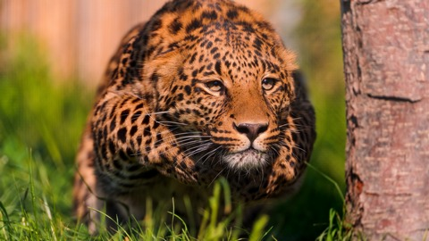

Тестирование свойства Filters
на изображении ниже:
(оригинал)
Blur
-webkit-filter: blur(2px);
Brightness
-webkit-filter: brightness(3);
Contrast
-webkit-filter: contrast(1.5);
Saturate
-webkit-filter: saturate(200%);
Opacity
-webkit-filter: opacity(50%);
Invert
-webkit-filter: invert(100%);
Sepia
-webkit-filter: sepia(0.5);
Grayscale
-webkit-filter: grayscale(0.7);
Hue Rotate
-webkit-filter: hue-rotate(270deg);
Drop Shadow(x,y,radius,color)
-webkit-filter: drop-shadow(5px 5px 10px #111);